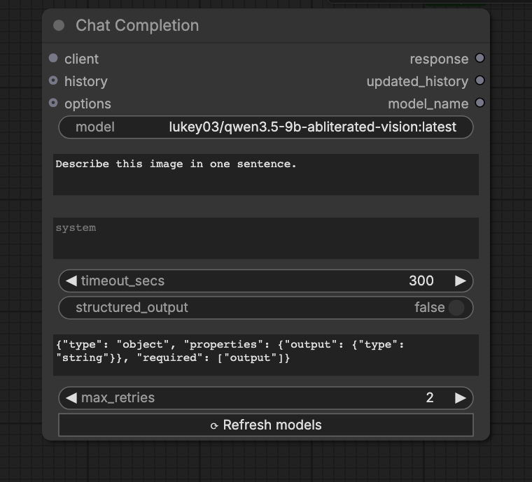
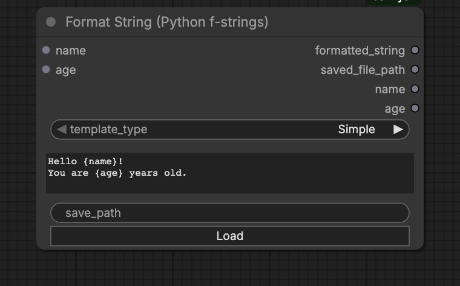
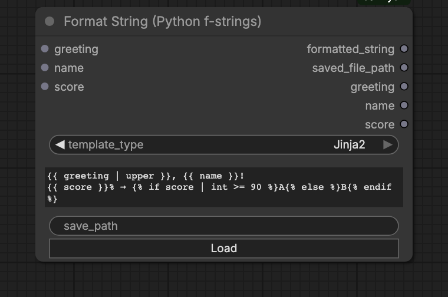
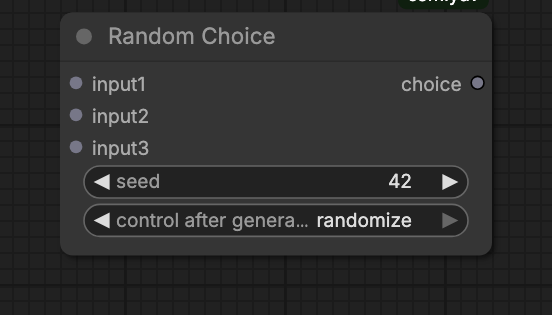
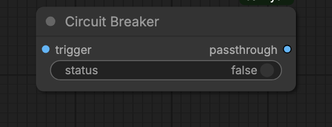
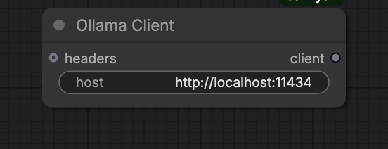
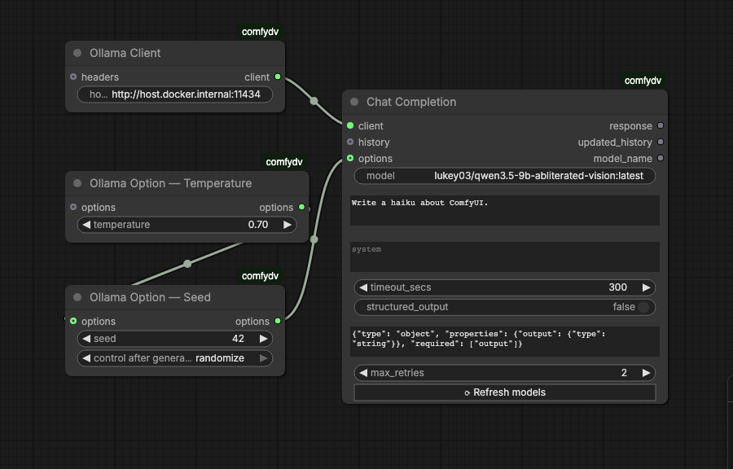
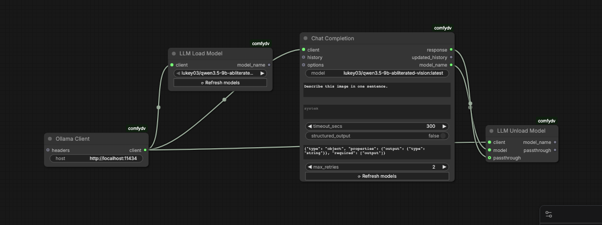
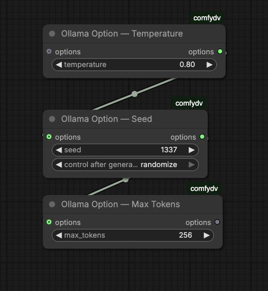

comfydv
Quality-of-life nodes for ComfyUI, built to disappear into your workflow.
comfydv fills the gaps ComfyUI's built-in library leaves on the table: string templates that build their own sockets as you type, seed-controlled randomisation, graceful mid-queue interruption, and a local-LLM integration that doesn't care whether you're running Ollama or llama.cpp. No Python required — install it, drop the nodes on your canvas, wire them up.

What is comfydv?
A small, focused ComfyUI utility pack. It exists because:
- It reads your intent, not just your syntax. Format String detects
{variables}in a template and adds/removes input sockets live, as you type — no manual socket wrangling. - One LLM integration, any local backend. Wire a Chat Completion node once; swap between Ollama and llama.cpp by changing a single upstream client node. Structured output, multi-turn history, and model load/unload work identically on both.
- It fails politely. Circuit Breaker halts a queue run cleanly instead of throwing a stack trace at you; a disconnected LLM server gets a specific, actionable error instead of a silent empty dropdown.
- Small, tested, boring in the best way. Every node is unit-tested and the local-LLM nodes are verified against real running servers, not just mocks.
What's inside
| Node | What it does |
|---|---|
| Format String | Renders a Python f-string or Jinja2 template. Sockets appear and disappear automatically as you type variables. |
| Random Choice | Accepts any number of typed inputs and returns one at random, with a seed for reproducibility. |
| Circuit Breaker | Halts the current queue run gracefully — no crash, just a clean stop — when a condition isn't met. |
| Ollama Client / LlamaCpp Client | Configure a connection to a local Ollama or llama.cpp server. Both emit the same LLM_CLIENT socket — every node below works with either. |
| LLM Model Selector | Live dropdown of models available on the connected server. |
| LLM Load Model / LLM Unload Model | Explicit VRAM management — pin a model in memory before inference, evict it after. |
| Chat Completion | Send a prompt (optionally with history) to the connected server; response shown inline and as an output socket. |
| Ollama Option — * | Seven composable parameter nodes (Temperature, Seed, Max Tokens, Top P, Top K, Repeat Penalty, Extra Body) that merge into Chat Completion's options input. |
| Ollama Debug History / Ollama History Length | Inspect an OLLAMA_HISTORY conversation list — pretty-print it or count its messages. |
Install
Via ComfyUI Manager (recommended): search for comfydv, click Install.
Manual:
cd /path/to/ComfyUI/custom_nodes
git clone https://github.com/darth-veitcher/comfydv.git
Restart ComfyUI. Nodes appear under dv/, dv/ollama, and dv/llamacpp in the node menu. Runtime dependencies (jinja2, aiohttp, pydantic-ai) install automatically via requirements.txt.
For local-LLM nodes, bring your own backend:
- Ollama — install Ollama, pull a model (
ollama pull qwen2.5:latest). - llama.cpp — build/install
llama-server, launch it in router mode.
Quickstart
- Right-click the canvas → Add Node → dv/ for Format String, Random Choice, and Circuit Breaker.
- For local LLM nodes: start Ollama (
ollama serve) orllama-server(router mode), then add nodes from dv/ollama/ or dv/llamacpp/ — the chat/model-management nodes are shared between both backends.
Format String
Type a template, get sockets. {variable_name} in f-string mode, {{ variable_name }} in Jinja2 mode — either way, comfydv watches what you type and keeps the node's inputs in sync automatically.

| Output | Content |
|---|---|
formatted_string |
The rendered result |
saved_file_path |
Where it was written, if save_path is set |
<var> … |
Each input passed through unchanged, for easy chaining |
Switch template_type to Jinja2 to unlock filters (| upper, | int), conditionals, and loops:

Random Choice
Wire in any number of same-typed inputs — images, strings, conditioning, anything ComfyUI can carry over a socket — and get one back at random.

seed = 0 randomises every run; any other value locks the selection. Unused input slots vanish automatically when you disconnect them.
Circuit Breaker
Stop a queue run cleanly when a condition isn't met, instead of letting a downstream node crash on bad input.

Wire a trigger (an image, or anything) into trigger and a boolean into status. status = false raises InterruptProcessingException — ComfyUI stops the run without an error dialog. status = true passes the trigger straight through.
Typical use: skip an expensive upscale pass when an upstream quality-check node says the draft's already good enough.
Local LLMs
One set of nodes, two interchangeable backends. Configure a connection once with Ollama Client or LlamaCpp Client — both output the same LLM_CLIENT socket — and every downstream node (model selection, load/unload, chat, structured output, multi-turn history) works exactly the same way regardless of which one you picked. Swapping backends means rewiring one node, not rebuilding your graph.
Connect and chat

- Ollama Client (default
http://localhost:11434) or LlamaCpp Client (defaulthttp://localhost:8080) — set the host. - LLM Model Selector — pick a model from the live dropdown, or wire a model name straight into Chat Completion.
- Chat Completion — wire in client, model, and prompt. The response renders inline in the node and is also available as an output socket.
A complete graph looks like this:

Manual memory management
Single-GPU and memory-constrained setups need explicit control over what's resident in VRAM. LLM Load Model pins a model into memory; LLM Unload Model evicts it immediately, freeing room for the next model or the rest of your image pipeline.

The Load → Chat → Unload chain is enforced by data dependencies, not by convention:
LLMLoadModel.model_name→ChatCompletion.model— guarantees Load runs before Chat, and feeds the model name straight in.ChatCompletion.model_name→LLMUnloadModel.model— guarantees Unload runs after Chat completes.- (Optional)
ChatCompletion.response→LLMUnloadModel.passthrough— Unload returns the response unchanged, so the rest of your workflow can still consume it.
Tuning generation
Chain any combination of Ollama Option — nodes ahead of Chat Completion to override inference parameters:

| Option node | Parameter |
|---|---|
| Temperature | temperature |
| Seed | seed |
| Max Tokens | num_predict |
| Top P | top_p |
| Top K | top_k |
| Repeat Penalty | repeat_penalty |
| Extra Body | arbitrary JSON, merged into options |
Multi-turn conversations
OLLAMA_HISTORY flows out of Chat Completion as a {"role", "content"} list. Feed it back into the next Chat Completion call for multi-turn context, or inspect it with Ollama Debug History / Ollama History Length.
llama.cpp
Everything above works unchanged against llama.cpp — swap in a LlamaCpp Client and the rest of the graph doesn't know the difference. The one thing llama.cpp needs that Ollama doesn't: router mode, a directory of models rather than a single -m model.gguf:
llama-server --models-dir ./models -c 8192
In exchange, router mode gives comfydv a richer live status than Ollama can report — loading and downloading, not just loaded/unloaded — plus the same explicit load/unload primitives Ollama's nodes already use.
Upgrading a workflow saved before this rename
Nodes were renamed once, to make them backend-generic (OllamaChatCompletion → ChatCompletion, etc.). If ComfyUI reports old node types as missing when you reopen a saved workflow, reconnect using this table — behavior is unchanged, only the names are:
| Old | New |
|---|---|
OllamaChatCompletion |
ChatCompletion |
OllamaModelSelector |
LLMModelSelector |
OllamaLoadModel |
LLMLoadModel |
OllamaUnloadModel |
LLMUnloadModel |
OLLAMA_CLIENT socket |
LLM_CLIENT socket |
OllamaClient kept its name — delete and re-add any node showing as missing, then rewire it to the same OllamaClient node.